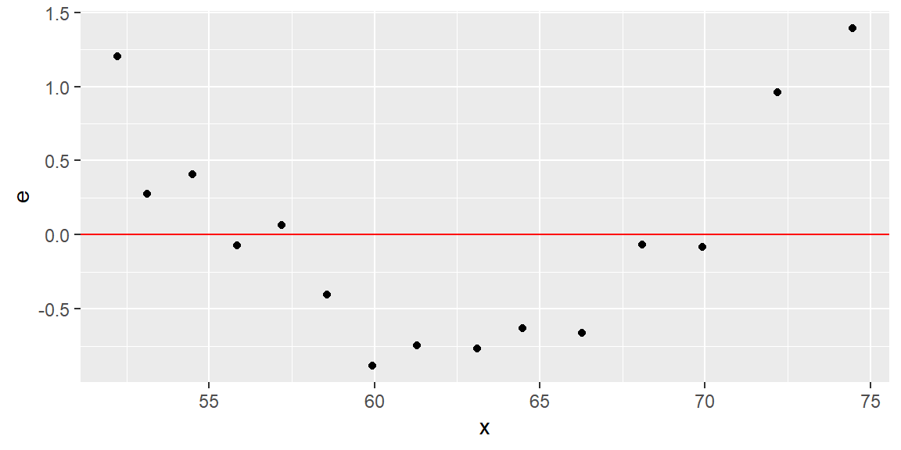

7Checking the Linearity and Constant Variance Assumptions
“…the statistician knows…that in nature there never was a normal distribution, there never was a straight line, yet with normal and linear assumptions, known to be false, he can often derive results which match, to a useful approximation, those found in the real world.” - George Box
7.1 Residual Diagnostics
7.1.1 Model Assumptions
Let’s review the assumptions for the simple linear regression model:
The mean of the probability distribution of \(\varepsilon\) is 0.
The variance of the probability distribution of \(\varepsilon\) is constant for all settings of the independent variable \(x\).
The probability distribution of \(\varepsilon\) is normal.
The errors associated with any two different observations are independent.
After fitting the model, we will need to check these assumptions.
7.1.2 Residuals
We check the assumptions of the model by examining the residuals: \[
\begin{align}
{e_{i} =y_{i}-\hat{y}_{i}}
\end{align}
\tag{7.1}\]
We do this since the assumptions, with the exception of the linearity assumption, are based on the error terms \(\varepsilon_i\). We can think of \(e_i\) as an observed value of \(\varepsilon_i\).
7.1.3 Properties of Residuals
Below are some properties of the residuals: \[
\begin{align}
\sum e_{i} & =0\\
\sum x_{i}e_{i} & =0\\
\sum\hat{y}_{i}e_{i} & =0 \\
\sum y_{i} & =\sum\hat{y}_{i}
\end{align}
\tag{7.2}\]
Clearly, from Equation 7.2, the mean of the residuals is \[
\begin{align}
\bar{e}_i=0
\end{align}
\tag{7.3}\]
The variance of all \(n\) residuals, \(e_1,\ldots,e_n\) is \[
\begin{align}
\frac{\sum\left(e_{i}-\bar{e}\right)^{2}}{n-2} & =\frac{\sum e_{i}^{2}}{n-2}\\
& =\frac{SSE}{n-2}\\
& =MSE\\
& =s^{2}
\end{align}
\tag{7.4}\]
7.1.4 Semistudentized Residuals
It will be helpful to studentize each residuals. As always, we do this by subtracting off the mean, \(\bar{e}_{i}\), and dividing by the standard error of \(e_{i}\).
In Equation 7.4, we said the variance of the sample of the \(e_{i}\)’s is MSE. For each individual \(e_{i}\), the standard error is not quite \(\sqrt{MSE}\). The actual standard error is dependent on the predictor variable(s). We will discuss this more in multiple regression.
For now, we will use the approximation \(\sqrt{MSE}\) and calculate \[\begin{align*}
e_{i}^{*} & =\frac{e_{i}-\bar{e}}{\sqrt{MSE}}\\
& =\frac{e_{i}}{\sqrt{MSE}}
\end{align*}\] We call \(e_{i}^{*}\) the semistudentized residual since the standard error is an approximation.
7.2 The Linearity Assumption
7.2.1 Residual Plots
We can check the linearity assumption by plotting the residuals vs the predictor variable or plotting the residuals vs the fitted values.
We usually examine a scatterplot to determine if a linear relationship between \(x\) and \(y\) is appropriate. There are times when the scatterplot makes it difficult to see if a nonlinear relationship exists. This may be the case if the observed \(y\) are close to the fitted line \(\hat{y}_i\). This usually means the slope is steep.
Example 7.1 (Weight and Height Data) In this example, we will consider the weights (in kg) and heights (in m) of 16 women ages 30-39. The dataset is from kaggle.
#fit the modelfit =lm(Weight~Height, data=dat)#plot with regression lineggplot(dat, aes(x=Weight, y=Height))+geom_point()+geom_smooth(method="lm", formula=y~x, se=F)
#make dataset with Weight, the fitted values, and residualsdat2 =tibble(x = dat$Weight, yhat = fit$fitted.values, e = fit$residuals)#plot x by residualsggplot(dat2, aes(x=x, y=e))+geom_point()+geom_hline(yintercept =0, col="red")

#plot fitted values by residualsggplot(dat2, aes(x=yhat, y=e))+geom_point()+geom_hline(yintercept =0, col="red")
7.2.2 Plotting against Predictor Variable or Fitted Values
Plotting the residuals against \(x\) will provide the same information as plotting the residuals against \(\hat{y}\) for the simple linear regression model.
When more predictor variables are considered, then plotting against the \(x\) variables and plotting against \(\hat{y}\) may provide different information. It is usually helpful to plot both in that case.
7.2.3 Data Transformation for Linearity
When the linearity assumption does not hold (as seen in the residual plots), then a nonlinear model may be considered or a transformation on either \(x\) or \(y\) can be attempted to make the relationship linear.
7.2.4 Transforming \(x\)
Transforming the response variable \(y\) may lead to issues with other assumptions such as the constant variance assumption or the normality of \(\varepsilon\) assumption.
If our only concern is the linearity assumption, then transforming \(x\) will be the best option. This transformation may be a square root transformation \(\sqrt{X}\), a log transformation \(\log{X}\), or some power transformation \(X^{p}\) were \(p\) is some real number.
Sometimes a transformation of \(x\) will not be enough to satisfy the linearity assumption. In that case, the simple linear regression model should be abandoned in favor of a nonlinear model.
7.3 Homogeneity of Variance
7.3.1 Residual Plots
As we did previously, we can plot the residuals against the predictor variable \(x\) or against the fitted values \(\hat{y}\) to help determine whether the variance of the error term \(\varepsilon\) is constant.
When the variance is constant, we say the model has homoscedasticity. When the variance is nonconstant, we say the model has heteroscedasticity.
7.3.2 Absolute Residuals and Squared Residuals
When examining a residual plot for non-constant variance, we look for any clear changes in the spread of the residuals. One common clear pattern seen when heteroscedasticity is present is a cone pattern.
We are usually not concerned about the sign of the residual when examining for heteroscedasticity. Thus, it is common to plot the absolute residuals or the squared residuals vs the predictor variable or fitted values.
Usually a least squares line is then fit to the absolute residual or squared residuals plot. If this line has a significant slope, then this gives evidence that the variance is nonconstant.
Example 7.2 (Diastolic Blood Pressure Data) We will model the diastolic blood pressure by the age of 54 healthy adult women. The data are found in Kutner et al1.
library(tidyverse)dat =read.table("bloodpressure.txt", header=T)fit =lm(dbp~age, data=dat)#add the fit line without using geom_smoothggplot(dat, aes(x=age, y=dbp))+geom_point()+geom_abline(slope = fit$coefficients[2],intercept = fit$coefficients[1])
By examining the scatterplot of dbp vs age, we already see evidence of nonconstant variance.
dat$e = fit |>resid()dat$yhat = fit |>fitted()#use the geom_smooth function to add a least squares line#for the residuals, the least squares line will always be #horizontal at 0ggplot(dat, aes(x=age, y=e))+geom_point()+geom_smooth(method ="lm",se = F)
#plot the squared residuals and add least squares lineggplot(dat, aes(x=age, y=e^2))+geom_point()+geom_smooth(method ="lm",se = F)
#plot the squared residuals and add least squares lineggplot(dat, aes(x=age, y=abs(e)))+geom_point()+geom_smooth(method ="lm",se = F)
In any of the residual plots we examine, we see the “cone” shape of the residuals which indicates the variance is nonconstant.
7.3.3 Tests for Heteroscedasticity
We can set up a hypothesis test for heteroscedasticity: \[\begin{align*}
H_0:&\text{ the variance is constant}\\
H_a:&\text{ the variance is non-constant}
\end{align*}\]
The procedures we will use usually test for variance that increases or decreases over the values of \(x\). That is, the spread of the points about the line is a cone shape.
7.3.4 Levene’s Test and Brown-Forsythe Test
The Levene test2 starts by dividing the range of the predictor variable \(x\) into \(k\) intervals. For each of the intervals, calculate the mean of the residuals in that interval \(\bar{e}_{j}\) where \(j\) denotes the \(j\)th interval.
Now, define the absolute deviation from the mean \[
d_{ik}=|e_{ik}-\bar{e}_{j}|
\]
An ANOVA F-test is then performed on the \(k\) groups. The ANOVA F-test will be discussed more later in the course. A small p-value is evidence that the variance is non-constant over the values of \(x\).
The Brown-Forsythe test3 is a modification of the Levene test in which the median \(\tilde{e}_k\) is used instead of the mean \(\bar{e}_l\). This test is robust against nonnormal errors.
7.3.5 Breusch-Pagan Test
A second test for non-constant variance is the Breusch-Pagan test4. This test assumes the variance for each \(\varepsilon_i\) is related to the values of \(x\) in the following way: \[
\ln \sigma^2_i = \gamma_0 + \gamma_1 X_i
\] Hence, a linear regression is assumed between \(\sigma^2\) and \(x\). We can fit the line by squaring the residuals and regressing on \(x\). The third plot in example above shows the squared residuals plotted against \(x\) and the fitted line.
If the variance is non-constant, then the slope of this line will be non-zero. Thus, a test for the slope is conducted. A small p-value is evidence that the variance is non-constant.
Because it is testing the slope, the Brown-Forsythe test assumes the error terms are independent and normally distributed.
Example 7.3 (Example 7.2 revisited) Let’s examine the blood pressure data from Example 7.2 again.
If you want the Brown-Forsythe test, then you will need to determine the \(k\) groups yourself and then use the bf.test function in onewaytests package.
In the lmtest package, the Breusch-Pagan test can be conducted by using the bptest function.
studentized Breusch-Pagan test
data: dbp ~ age
BP = 12.541, df = 1, p-value = 0.0003981
Since the p-value is low, then there is sufficient evidence to conclude the variance is not constant through different values of \(x\).
Kutner, M. H., Nachtsheim, C. J., Neter, J., & Li, W. (2004). Applied Linear Statistical Models McGraw-Hill/lrwin series operations and decision sciences.↩︎
Levene, H. (1960) Robust Tests for Equality of Variances. In: Olkin, I., Ed., Contributions to Probability and Statistics, Stanford University Press, Palo Alto, 278-292.↩︎
Brown, M. B., & Forsythe, A. B. (1974). Robust tests for the equality of variances. Journal of the American statistical association, 69(346), 364-367.↩︎
Breusch, T. S., & Pagan, A. R. (1979). A simple test for heteroscedasticity and random coefficient variation. Econometrica: Journal of the econometric society, 1287-1294.↩︎